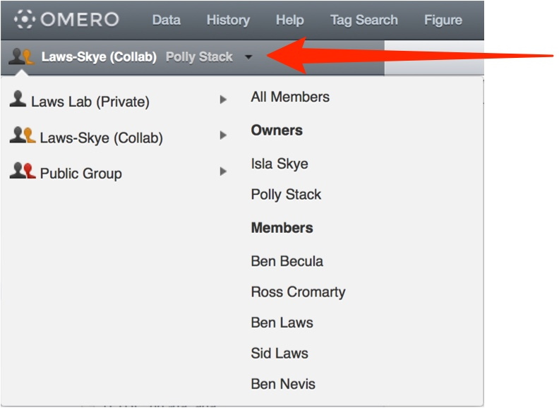

User Help
- User Help Home Page
 Quickstart User Guides
Quickstart User Guides
- Workflow User Guides
 OMERO.insight
OMERO.insight
- OMERO.web
- Other OMERO Applications
- More
OMERO.web
Using OMERO.web to view and work with image data via a web browser.
You need to use the URL provided by your institute’s OMERO administrator to access the OMERO.web client.
Logging in, you do not have to enter a server name, but otherwise it is the same as for OMERO.insight, using the same username and password.
The default screen shows your data tree in the left-hand panel.
When data is selected in the tree, the thumbnails are displayed in the center panel, and the metadata and other information in the right-hand panel.

To view an image in the Image Viewer, select the image in the data tree and click on the Launch Full Viewer button.
or double click on the image or thumbnail.

In the Image Viewer images can be viewed in Normal, Maximum Intensity or Split-Channel.

Scroll or step through Z stacks using the slider and controls to the left of the image, and time sequences (T) using the slider and controls below the image.

Zoom in and out of the image using the up and down arrows in the text box.
Click the 1:1 button to view at true size.
Click the diagonal arrow button to zoom to fit the window.

Click on Edit to open the Rendering Details window.
Use the sliders or text boxes to adjust settings for the channels.
Toggle channels and color on and off using the color wells and checkbox.

Click on Image Information to see the basic information and dimensions of the image.

Click on Image Link to generate a URL which can be copied and pasted.
This link provides direct access via a web browser to your image, allowing people who are outside your group or not even OMERO users to view your image.

Click on Show ROIs to view ROIs on the image and see details in the pop-up window (only visible if the image has ROIs).
Existing ROIs can be viewed but cannot be edited, and new ROIs cannot be added.

In the General tab of the right-hand panel, click on the pencil icon to edit the image name or image description.
Summary details of the image can be seen below the description.

Click on the Link button to generate a URL to share the image (as described previously).

Click on the + button to add a Tag or Attachment.
You can attach existing tags or files, create and attach new tags or upload and attach files from disks.
Click on Accept to complete.

Enter a new comment in the text box and click on the Add Comment button to save.

If you belong to more than one group, you can interact with the data of other users in your group.
Click on the drop-down arrow to the right of your name in the bar above the data tree, and select the desired group and user.
You can also share data with other users in different groups by adding it to your Public list.
Select the image(s) you wish to share.
Click on the Basket icon in the toolbar.

A red number, representing the number of shared images, will appear in the Basket icon to the right side of the top toolbar.
Click on the numbered Basket button to view a list of shared items in the basket.
Click on the Manage Basket button in the drop-down list to view the images.

Select an image and click on the Globe button in the Basket window to share it.

In the Share window add a message and select the members you wish to share the data with.
Click Accept when you have finished.

Click on the Public tab of the left-hand panel to view the data shared with you and other users.

From the OMERO.web client, you can download and run a Java Web Start version of OMERO.insight.
Using the Java Web Start OMERO.insight client enables you to import data, edit ROIs and use other functionality not yet supported by the OMERO.web client.
Java Web Start also enables OMERO.insight client to be used on machines where restrictions prevent you from installing new software.
Click on the Java Web Start button and follow the instructions, accepting the software as “Trusted”.

All Tutorial Material is available on line at: help.openmicroscopy.org
The Main OME website is at: www.openmicroscopy.org